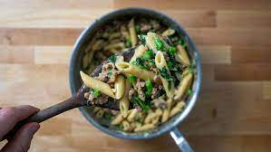

Pasta

Ingredients
- Pasta of your choosing - 100mg
- Chicken breast or thigh - 200mg
- Oil - 5g
- Garlic - 2 tsp
- Mozarella
- Roasted/grilled peppers
- Tomato puree - 2 tbsp
- Peas
- Brocolli
- Basil
- Salt
Steps:
- Season chicken with spices of your preference or used left over chicken. I used salt, italian hearbs, chilli flakes and garlic powder. Then throw it in the oven at 225 for 25 minutes.
- Heat oil in the pot, once ready, add the garlic and stir for 30 seconds.
- Cook the brocolli and peas in the garlic and oil for a few minutes, leave a bit of a bite.
- Remove vegetables.
- Add the pasta, covering it with boiling water and give a pinch of salt.
- Cook the pasta, stirring constantly until the water has been absorbed.
- Once cooked down, add tomato puree and stir in.
- Add vegetable (including the grilled peppers) and mozarella.
- Eat food.